The Heliostat Field page displays the variables that specify the position of the heliostats in the solar field along with the heliostat geometry and optical properties. Unlike parabolic trough and dish system designs, which can be based on modular designs of individual components, power tower system designs typically require optimization of the tower height, receiver geometry, and distribution of heliostats around the receiver as a complete system.
Page numbers relevant to this section from references cited with download links under "Power Tower" on the CSP Publications page of the SAM website:
•Wagner (2008) p 10, 23-42, 49
•SolarPILOT documentation (forthcoming): Layout Setup, Heliostats
•Kistler (1986) p 25-37, 39-47, 74-75

The heliostat field inputs determine the position of heliostats in the field and define optimization settings for the SolarPILOT optimization algorithm. When you optimize the heliostat layout and tower dimensions in SAM, it runs SolarPILOT to automatically calculate heliostat positions and optimal values for the tower height, receiver height, and receiver diameter. The optimization algorithm considers the system's projected cost of energy by running a simulation for several time steps that represent a range of weather conditions using data from the weather file specified on the Location and Resource page and costs from the Installation Costs and Operating Costs pages. The algorithm modifies the receiver dimensions, tower height, and field layout to based on the optimization settings to find the values that minimize the system's cost of energy. The optimization objective is penalized in the cases where either the maximum flux on the receiver exceeds the specified limit, or when the power delivered from the receiver after estimated surface and piping losses does not meet the design-point value. Heliostat Field Table The heliostat field table lists the x-y coordinates (X Position, Y Position in the table) of each heliostat in the field, where the point (0,0) is the position of the tower. You can either import heliostat position data from a text file, paste it from your computer's clipboard, or optimize the field to calculate heliostat position coordinates and optimize the field geometry automatically. You can also export the x-y coordinates from the table to a text file, or paste them to your computer's clipboard. The two-dimensional map of the heliostat field shows the position of each heliostat in the table. The vertical axis is north-south, and the horizontal axis is east-west. Each row in the table represents a single heliostat position. The top of the map is north of the bottom of the map. Heliostats The total number of individual heliostats in the field, equal to the number of rows in the heliostat layout table. SAM automatically populates the field when you import heliostat position data from a file or optimize the field layout. Field and tower model type (during simulation)These options determine what happens when you click Simulate to run a simulation. Use current field layout and tower dimensions Choose this option to use data from the heliostat field table with the values of Tower height, Receiver height and Receiver diameter/aperture width from the Tower and Receiver page for the simulation. For this option, SAM does not reoptimize the field geometry or tower dimensions when you run a simulation. Optimize heliostat layout and tower dimensions Choose this option to run SolarPILOT to recalculate the number and position of heliostats and the values of tower height, receiver height and receiver diameter before running the simulation. This option may modify values in the heliostat table, along with the tower height and receiver height and diameter values. This option uses the inputs under Optimization Settings in addition to considering the location and other design parameters and system costs. Generate heliostat layout using current tower dimensions Choose this option to run SolarPILOT to recalculate the number and position of heliostats when you run a simulation. SAM uses the values of Tower height, Receiver height and Receiver diameter/aperture width from the Tower and Receiver page to recalculate the number and position of heliostats before running the simulation. This option may modify values in the heliostat table. Field and Tower Design MacrosMacro: Generate heliostat layout using tower dimensions Run SolarPILOT now to generate values for the table of heliostat x-y positions for the tower height, receiver height, and receiver diameter/aperture width values that you specify, taking into consideration the location and other design parameters and system costs. Macro: Optimize heliostat layout and tower dimensions Run SolarPILOT now to generate both values for the table of heliostat x-y positions and calculate optimal tower height, receiver height, and receiver diameter/aperture width values. This option uses the inputs under Optimization Settings in addition to considering the location and other design parameters and system costs. Note. The optimal receiver design depends on the maximum receiver flux value on the Tower and Receiver page. The optimization algorithm seeks to minimize the cost of energy given the maximum receiver flux. If the flux at the reference point exceeds the maximum value, the algorithm considers increasing the receiver surface area to avoid exceeding the maximum flux in spite of the higher cost. See SolarPILOT Field Layout and Optimization for details. Optimization SettingsThe optimization settings allow you to control aspects of the SolarPILOT optimization algorithm. The local derivative free (DFO) algorithm used in SAM is implemented in the NLopt package, provided for free online by MIT. This open-source code is implemented in C++, and can be readily incorporated into existing simulation frameworks such as SAM. A number of algorithms are provided in the NLOpt package, and gradient-based, global, and local derivative-free algorithms are all represented. Because this application is particularly interested in DFO without specified upper or lower bounds on variables and with a maximum flux constraint, only a one algorithm is used. The Bounded Optimization BY Quadratic Approximation (BOBYQA) routine optimizes the objective by iteratively constructing an objective function model based on a quadratic surface approximation (M. Powell, 2009). The stopping criteria for this algorithm was modified for the NLopt library. As described in the reference, most iterative changes to the variable set represent a solution to the quadratic problem within the current trust region, which can change from iteration to iteration. This algorithm (along with its predecessor NEWUOA) is somewhat unique among the NLopt library in its application of a quadratic response surface model. Initial optimization step size The normalized step size used by SAM’s optimization algorithms to take the first step away from the initial design point. The step size represents the total fractional departure in any and all optimization variables. For example, if the initial design to be optimized includes a tower height 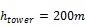, receiver height of 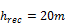, and receiver aspect ratio 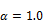, all variables are first normalized by their initial value: 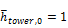 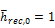 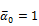 Next, the optimization algorithm chooses a search “direction” and takes a step by manipulating the normalized variable values. The step taken must fall within the initial optimization step size. Assuming a step size of 0.02, one such step may result in the values: 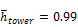 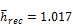 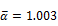 Examining the step distances, we see that: 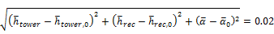 Maximum optimization iterations The maximum number of iterations (field layouts) allowed during optimization. The algorithm may satisfy convergence criteria before reaching the iteration limit and terminate. If the algorithm reaches the maximum number of iterations without converging, SAM will use the layout with the best objective function observed during iteration. Optimization convergence tolerance The normalized tolerance that determines whether the algorithm has converged. Convergence may be obtained by the algorithm taking a normalized step size that is less in magnitude than the tolerance, or by the objective function (normalized) value ceasing to change by at least the tolerance value from iteration to iteration. Increasing the tolerance value will generally result in fewer optimization steps taken, but may lead to lesser improvement in the objective function before convergence. Note that the algorithms have different procedures for algorithm termination, and the tolerance value is usually one of several criteria. For more detailed information on algorithm behavior, refer to the NLOpt documentation. |
The heliostat properties define the area of a single heliostat mirrored surface, focusing and canting properties, and the optical error characteristics of the heliostat. Note that SAM assumes that each heliostat employs a two-axis drive system with a pivot at the center of the mirrored surface. Heliostats are also assumed to be rectangular in shape. Individual facets are modeled to be adjacent with no gaps in between. Heliostat width, m The width of the heliostat surface in meters, including the mirrored surface, edge supports and any cutouts. Heliostat height, m The height of the heliostat surface in meters, including the mirrored surface, edge supports and any cutouts or slots. SAM assumes that the heliostat pivot point is half of the heliostat height. (The tower height is defined as the height between the pivot point and the vertical center of the receiver.) Ratio of reflective area to profile The fraction of the area defined by the heliostat width and height that actually reflects sunlight. This value determines the ratio of reflective area on each heliostat to the total projected area of the heliostat on a plane normal to the heliostat surface. The ratio accounts for non-reflective area on the heliostat that may cause shading of neighboring heliostats. Single heliostat area, m² The area of the heliostat mirrored area, equal to the product of the heliostat width and height and the ratio of reflective area to heliostat profile. Image error (slope,single axis), mrad A measure of the deviation of the actual heliostat image on the receiver from the expected or ideal image that helps determine the overall shape and distribution of the reflected solar flux on the receiver. This value specifies the total conical error distribution for each heliostat at one standard deviation in radians. The Image Error term describes the “slope” error of the reflector surface, or equivalently the error distribution in which a normal vector to the heliostat may lie. The error term lies along a single axis in heliostat coordinates. SAM assumes that the orthogonal axis shares the same image error. SAM applies the value to each heliostat in the field regardless of its distance from the tower. The image error accounts for all error sources, including tracking imprecision, foundation motion, mirror waviness, panel alignment problems, atmospheric refraction and tower sway. Reflected image conical error, mrad The equivalent conical error distribution about the reflected image vector, given the Image Error input. The total conical error is calculated as the root sum square of twice each individual-axis error component, though SAM assumes both error terms are equal. 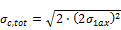 Here, 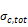 is the reflected image conical error (mrad), and 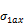 is the Image Error (slope, single axis) input. Number of heliostat facets – X The number of heliostat facets (also known as “canting” panels) in the X direction. As shown in the following diagram, there are 5 facets in the X direction. 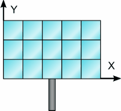 Number of heliostat facets –Y The number of heliostat facets (also known as “canting” panels) in the Y direction. As shown in the diagram above, there are 3 facets in the Y direction. Heliostat focusing method The method used to determine the focal point for the heliostat (facet) surface(s). If multiple facets are used, the method applies to each facet individually. Ideal Flat Heliostat canting method The method used to determine the focal point for the facets (if multiple facets are used). The focal point of the facets may differ from the focal point of the mirror surfaces. Canting is achieved by mounting individual mirror facets such that their normal vector differs from the heliostat aiming vector. Individual facets may be canted and either flat or focused. Canting of flat facets achieves some degree of focusing, and performance of canted heliostats is maximized when sun position matches most closely that at which the panels were canted. As sun position deviates from the canting design point, additional optical aberration occurs and may degrade heliostat performance. The canting process involves first choosing the heliostat aim point (determining the heliostat aiming vector) then modifying the aiming vector of each individual facet to achieve the best possible concentration ratio on the receiver given the heliostat’s aiming position. Facet aiming vectors may differ from the heliostat aiming vector after canting because of the displacement of each facet away from the centroid of the receiver (the origin of the receiver aiming vector). None On-axis Equinox Summer solstice Winter solstice Mirror Reflectance and Soiling The mirror reflectance input is the solar weighted specular reflectance. The solar-weighted specular reflectance is the fraction of incident solar radiation reflected into a given solid angle about the specular reflection direction. The appropriate choice for the solid angle is that subtended by the receiver as viewed from the point on the mirror surface from which the ray is being reflected. For parabolic troughs, typical values for solar mirrors are 0.923 (4-mm glass), 0.945 (1-mm or laminated glass), 0.906 (silvered polymer), 0.836 (enhanced anodized aluminum), and 0.957 (silvered front surface). |
Heliostat stow/deploy angle, degrees Solar elevation angle below which the heliostat field will not operate. Wind stow speed, m/s Wind velocity from the weather file at which the heliostats defocus and go into stowed position. At wind speeds above the stow speed, SAM assumes that the heliostats move into stow position to protect the mirror surface and support structure from wind damage. SAM accounts for the parasitic tracking power required to stow the heliostats, and to reposition them when the wind speed falls below the stow speed. Heliostat startup energy, kWe-hr The energy required to bring a single heliostat out of stow position to begin operation. Heliostat startup energy is applied during time steps when the field first operates after inactivity. Heliostat tracking energy, kWe The power required to operate a single heliostat. The tracking energy is applied during each time step in which a heliostat provides power to the receiver. Design-point DNI, W/m2 The direct normal irradiation (beam normal) available at the reference design point. The power delivered to the receiver by the field when SAM determines the solar field layout depends on the Design-point DNI value that you specify. Increasing this value indicates that fewer heliostats are needed to achieve the reference condition power, while decreasing this value has the opposite effect. The design-point DNI value should represent the DNI at which your plant should achieve the specified thermal rating, including thermal and piping losses The Design-point DNI value is applied at the summer solstice noon sun position. |
Atmospheric attenuation is the optical loss applied to each heliostat due to scattering and distortion of light as it travels the distance between the heliostat and receiver. Attenuation loss depends strongly on the site air content and weather conditions, and attenuation increases as the distance between the heliostat and receiver increases. You can define attenuation loss using a polynomial equation that calculates the fraction of loss as a function of the distance that the reflected light travels (also known as slant range). The polynomial equation takes the following form, assuming polynomial coefficients 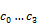: 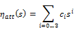 Where: 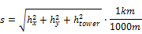 The heliostat x-y position 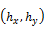 and the tower height 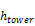 determine the slant range in kilometers. Polynomial coefficient 0 The constant term in the atmospheric attenuation polynomial equation. Polynomial coefficient 1 The linear term in the atmospheric attenuation polynomial equation. Polynomial coefficient 2 The quadratic term in the atmospheric attenuation polynomial equation. Polynomial coefficient 3 The cubic term in the atmospheric attenuation polynomial equation. Average attenuation loss, % SAM calculates the average attenuation loss for the current field layout. This calculated value is the average attenuation loss evaluated according to the attenuation loss polynomial over all heliostat positions specified in the layout table. |
Max Heliostat Distance to Tower Height Ratio and Min Heliostat Distance to Tower Height Ratio The maximum and minimum ratio of the distance from the heliostat furthest and closest from the tower to the tower height. Tower Height, m The height of the tower in meters, from the heliostat pivot points to the vertical center of the receiver panels. Specify this value on the Tower and Receiver page. Note that the tower height value may be automatically populated by the SolarPILOT optimization algorithm. Max Distance to Tower and Min Distance from Tower, m The maximum and minimum allowable radial distances in meters between the center of the tower base and heliostats furthest from the tower. Under certain conditions, SAM uses this value to calculate the radial step size. (See radial step size variable description below.) |
The heliostat positions in the field are determined by the table of x-y coordinates for each heliostat in the field. You can either generate data for the table automatically using SolarPILOT, or import the data from a text file. This section explains how to import the data from a text file. Note. You can also paste data into the table from your computer's clipboard as rows of tab-delimited values. Using the Layout Table with External DataSAM can model a wide variety of heliostat field layouts originating from any kind of layout method. You can model field layouts generated outside of SAM by importing the heliostat positions into the table on the Heliostat Field page. You can either import a text file of x-y heliostat coordinates or copy and paste the data into the table from a spreadsheet program or text editor. After you import the data, you can use the diagram of the field to verify that it imported correctly. Notes. Each row specifies the position of an individual heliostat relative to the tower. The first column in the table specifies the x-coordinate along the east-west axis of the field, with negative values indicating positions west of the tower, and positive values indicating positions east of the tower. The second column specifies the y-coordinate along the north-south axis, with positive values indicating positions north of the tower, and negative values indicating positions south of the tower. The tower is assumed to be at 0,0. Note that this convention also applies to systems in the southern hemisphere. SAM allows input of any field layout with no restrictions on heliostat positioning, field symmetry, etc. Use negative values for positions west and south of the tower. The heliostat coordinates do not have to be in a particular order in the file. Each column in the file should be separated by a tab or comma, and each row by a new line. A file with the following contents would describe a solar field with three heliostats at (x = 0.0, y = 75.0), (x = 7.5, y = 70.0), and (x = 15.0, y = 65.0): 0.0 75.0 7.5 70.0 15.0 65.0 |
SAM uses the land area to calculate land-related costs on the Installation Costs page when you specify costs in $/acre. Non-solar field land area, acres The land area occupied by the system, not including the heliostat field and tower. Solar field land area multiplier The ratio of the land area occupied by the solar field to the base land area. Use this multiplier to account for any land required for the solar field in excess of the convex hull defined by the base land area. Base land area, acres The land area contained within a convex polygon that tightly bounds the heliostat field. The base land area includes any region contained within the heliostat field boundary, including the base of the tower. SAM calculates the base land area by constructing a “convex hull” around the heliostat field layout and calculating the total area of that shape. The following figure illustrates a heliostat field layout and the convex hull shape determined by SAM. The convex hull is a polygon with vertices overlapping the set of most distant heliostat positions at any given azimuthal angle. 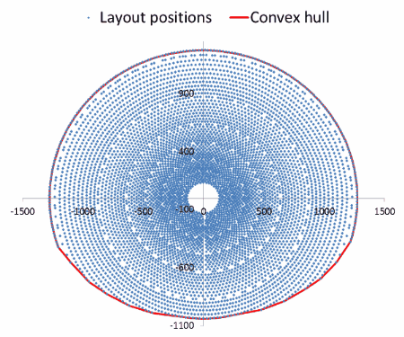 Total land area, acres The land area required for the entire system, including the heliostat field, tower, power plant, piping, storage tanks, buildings, etc. Total Land Area (acres) = Non-Solar Field Area (acres) + Base Land Area (acres) × Solar Field Land Area Multiplier The total land area appears on the Installation Costs page, where you can specify land costs in dollars per acre. Total heliostat reflective area, m² Total mirrored area of the heliostat field, equal to the heliostat reflective area multiplied by the number of heliostats. SAM uses the total reflective area to calculate the site improvements and heliostat costs expressed in dollars per square meter on the Installation Costs page. |
The heliostat field availability losses account for losses due to soiling, field component outages, or other events that affect the performance of equipment in the solar field. Time Series Performance Losses The time series performance losses apply during the performance simulation. Click Edit losses to specify constant, hourly, or hourly block schedules to alter the solar field output over time. The loss affects the solar field optical efficiency by increasing or decreasing the efficiency proportionally based on the value(s) that you specify for availability. This input may be useful in characterizing heliostat downtime, washing schedules, or other effects where field production may not match the ideal calculation. The default value of 1% for the constant loss is to account for heliostat availability losses due to downtime of some heliostats in the field for maintenance and repair. Design-point availability The design-point availability is an input to the SolarPilot optimization. It is not used during the performance simulation. Use this value to ensure that the optimization accounts for availability losses you are including the performance simulation. |
SolarPILOT™ simplifies the task of choosing values for the relatively large number of input parameters required to specify the power tower solar field and receiver. Because the heliostat field is typically the most capital intensive part of a power tower project, often accounting for 30-40% of the total installation cost, optimizing the heliostat field size is a critical step in minimizing overall project cost. The SolarPILOT optimization algorithm searches for a set of optimal system design values, where the optimal system is defined as the one that results in the lowest levelized cost of energy. Note that the optimization process is separate from the simulation process. When you run SolarPILOT, it populates some of the input variables in the SAM input pages (listed below) with optimal values. Before running simulations, you can choose to either keep the values generated by the algorithm or modify them. SolarPILOT was developed by NREL and generates field layouts and characterizes optical performance of the solar field using an analytical technique derived from the Hermite polynomial approach used in DELSOL3 and elsewhere (Dellin, 1979; Kistler, 1986; Lipps & Vant-Hull, 1978; Walzel, Lipps, & Vant-Hull, 1977). More information on SolarPILOT is available in the SolarPILOT technical documentation. The DELSOL3 code from Sandia National Laboratories is available at http://energy.sandia.gov/?page_id=6530, and was implemented in SAM 2014.1.14 and older versions through the PTGen program described in the thesis Simulation and Predictive Performance Modeling of Utility-Scale Central Receiver System Power Plants (Wagner 2008) (PDF 33 MB). To use SolarPILOT for optimization: 1.On the Installation Costs page, enter values for the capital costs. 2.On the Heliostat Field, Power Cycle, and Tower and Receiver pages, enter values defining geometry and optical parameters. 3.On the Heliostat Field page, enter values to define the parameters of the optimization. 4.On the Heliostat Field page, click Optimize Solar Field Geometry. As the optimization progresses, SAM displays a table showing the tower height (THT), receiver height to diameter ratio (Aspect), receiver height (RecHeight), along with the objective function (Obj) and peak flux intensity on the receiver (Flux). The objective function value is a surrogate for cost of energy, but includes penalties for flux exceeding the maximum allowable value or power falling below the target design-point value. The objective function value is not the same as the levelized cost of energy, and is only useful in the context of the optimization. 5.After SolarPILOT finishes the optimization, SAM displays the the optimization results in the Optimization Summary table. To replace the inputs for receiver height, receiver diameter, tower height, and heliostat layout in SAM with the optimal values in the table, click Yes. To discard the optimization results without changing the SAM inputs, click No. 6.Review the variables on the input pages. Modify any values as needed, and then configure and run simulations to simulate the system(s) and display annual production, levelized cost of energy, and other results on the Results page. Geometry OptimizationOptimizing the solar field reduces the system's cost of energy by exploring the design space around the initial guess values for tower height, receiver height, and receiver aspect ratio. SolarPILOT uses the optimization algorithm that you specify on the Heliostat Field page to manipulate the design. The algorithm is constructed to seek the minimum cost of energy for the system subject to maximum flux and minimum power constraints. Each step in the optimization process consists of a full layout and performance simulation performed by SolarPILOT. Optimization accounts for the weather data in the file that you select, capital costs, optical performance, and approximate thermal performance. The optimization algorithm uses the solar multiple and the estimated receiver and piping thermal losses to calculate the receiver's thermal rating, which is calculated as follows: 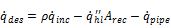 Here, 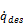 is the receiver design-point thermal power output that is displayed as Receiver Design Thermal Power (MWt) on the Tower and Receiver page, is the Coating Absorptance value from the Tower and Receiver page, 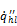 is the Estimated Receiver Heat Loss (kWt/m2) value from the Tower and Receiver page, 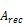 is the calculated Receiver Area value displayed on the Installation Costs page, and 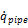 is the Total Piping Loss (converted to MWt) displayed on the Parasitics page. The algorithm holds the following variables constant as it searches for the optimal system: •Solar Multiple on the Tower and Receiver page. •Nameplate Capacity on the Power Cycle page. •Heliostat Width on the Heliostat Field page. •Heliostat Height on the Heliostat Field page. •Maximum Receiver Flux (boiler, superheater, and reheater fluxes for the direct steam tower model) on the Tower and Receiver page. The algorithm searches to find optimal values of the following variables on the Tower and Receiver page. When SolarPILOT finishes running, SAM optionally populates the variables with the optimal values. •Receiver Diameter •Receiver Height (calculated as a function of the receiver height to the receiver diameter ratio) •For the direct steam tower model, boiler, superheater, and reheater height. The sum of these three heights is the receiver height. •Tower Height SAM also populates the following variables on the Heliostat Field page with values from SolarPILOT: •Field layout table •Total Reflective Area •Number of Heliostats The optimization algorithm uses the following values from the input pages, but does not change their values. From the Heliostat Field page: •Heliostat Width •Heliostat Height •Ratio of Reflective Area to Profile •Mirror Reflectivity and Soiling •Max Distance from Tower •Min Distance from tower •Image Error For the molten salt tower model, from the Tower and Receiver page: •Coating Absorptivity •Max Receiver Flux •Estimated receiver heat loss •Receiver flux map resolution For the direct steam tower model, from the Tower and Receiver page: •Coating Absorptivity •Max Boiler Flux •Max Superheater Flux •Superheater Outlet Temperature Set Point •Reference Superheater Efficiency •Max Reheater Flux •Reheater Outlet Temperature Set Point •Reference Reheater Efficiency •Estimated receiver heat loss •Receiver flux map resolution From the Power Cycle page: •Nameplate Capacity •Rated Cycle Conversion Efficiency Since the optimization algorithm uses derivative-free nonlinear algorithms, it is impossible to guarantee that the solution identified by SAM is optimal. The success of the optimization algorithm depends on the initial guess values (the values entered for receiver height, diameter, and tower height) when the optimization process begins and on the optimization settings on the Heliostat Field page. It is possible that the algorithm will converge to a solution that is not optimal, or to a solution that does not satisfy the flux or power requirements that you specify. Finding an optimal set of input parameters is often an iterative process that may require you to run the optimization algorithm and adjust guess values or settings several times until the algorithm finds a reasonable field layout for your analysis. You may find more consistent success by successively reducing the Initial Optimization Step Size, decreasing the Optimization Convergence Tolerance, or starting the simulation using randomized starting values for the receiver height, diameter, and tower height. Keep in mind that because the algorithm uses capital costs from the Installation Costs page in the optimization process, unreasonable cost values may also prevent the algorithm from finding an optimal field layout. Guidelines for Choosing Variable Ranges for OptimizationThe optimization algorithm does its best to find parameter values for an optimal system within the search ranges you specify on the SolarPILOT input tabs. Because the algorithm searches a discrete number of values within the range for each parameter, defining too broad of a range increases the chances that the optimal value lies between the values included in the search. On the other hand, defining too narrow a range increases the chances that the optimal value lies outside of the search range. The ability of the optimization algorithm to find an optimal system is sensitive to the following variable ranges: •Receiver diameter range, defined by Minimum Receiver Diameter and Maximum Receiver Diameter. •Receiver height to diameter ratio range, defined by Minimum Receiver Height/Diameter Ratio and Maximum Receiver Height/Diameter Ratio. •Tower height range, defined by Minimum Tower Height and Maximum Tower Height. •Heliostat distance from tower range, defined by Maximum Distance from Tower and Minimum Distance from Tower values on the Heliostat Field page. The following rules of thumb may be helpful in choosing search ranges for these variables, although they may not apply to some systems. •Tower height: The tower height typically falls between 15 m for very small systems (5 MWe) and 300 m for very large systems (150 MWe). For example, a reasonable range for a 30 MWe system with a solar multiple of 1.0 would be between 40 m and 120 m. •Receiver diameter: The optimization algorithm searches for a receiver diameter value that maximizes absorbed radiation from the heliostat field within the flux limit defined by the maximum value on the Receiver/Tower page. Like the tower height, the receiver area typically scales with system's design thermal power. For very small systems, the optimal receiver diameter is typically between 1 m and 3 m, while very large systems may require a diameter of 25 m. •Receiver height to diameter ratio: This ratio should generally fall between 0.5 and 2.0. •Heliostat distance from tower: If the minimum distance is too small, the inner zones in the heliostat will contain no heliostats (the first rows in the field layout table on the Heliostat Field page contain zeros), which will cause the simulation to fail. If the maximum distance is too large, the outer zones will contain no heliostats. On the other hand, if the maximum distance is too small, all of the outer zones will contain heliostats. For very small systems, the maximum distance might be set to 300 m, and for very large systems, a distance of 2000 m might be appropriate. Field LayoutThe heliostat field layout is managed by NREL’s SolarPILOT™ software. SolarPILOT replaces DELSOL3 in SAM 2014.1.14 and older versions. SolarPILOT evaluates the heliostat field layout by characterizing each potential heliostat position individually. This approach replaces DELSOL3’s zonal simplification. This approach allows much greater flexibility in the types of heliostat field layouts that SAM can model, although improved flexibility comes with a greater computational burden for optical characterization. SolarPILOT is available as stand-alone software, and is integrated with SAM using its application programming interface (API) SAM. SAM offers two options for designing the heliostat field: •You can design the field outside of SAM and import the layout as a table of heliostat positions with Cartesian x and y coordinates with respect to the tower at position (0,0). •You can use SAM to run SolarPILOT and automatically generate heliostat positions given a tower height, heliostat geometry and optical properties, and receiver geometry and optical properties. SAM uses the following process to choose which heliostat positions will be included in the final layout: 1.Collect user-specified information on receiver geometry, heliostat geometry, system optical properties, tower height, plant location and weather data, atmospheric conditions, and field layout constraints. Choose each input in this group carefully, as the layout algorithm incorporates all of this information in identifying the most productive heliostat positions. 2.Generate a set of potential heliostat positions using the "radial stagger" layout method. All positions within the minimum and maximum land bounds are initially included in the list of potential heliostats. The radial stagger layout method places heliostats in rows of constant radius (iso-radial lines) where the center of the tower base is the center point and along lines of constant azimuth angle (aso-azimuthal lines): 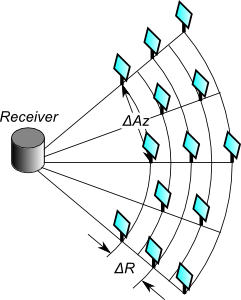 The initial spacing between heliostats in a row is a distance twice the width of a heliostat. As the radial position of the rows increases, so too does the spacing between heliostats as they maintain their position along an azimuthal line. Spacing continues to increase until the distance between heliostats meets or exceeds 2 ⅔ times the heliostat width. Spacing then resets to the original factor of 2 times the width. The radial spacing between rows depends on the distance of each row from the tower. Row positions are determined to ensure that heliostats that lie directly behind a closer row (every other row in the layout) has sufficient space to eliminate blocking of reflected light:
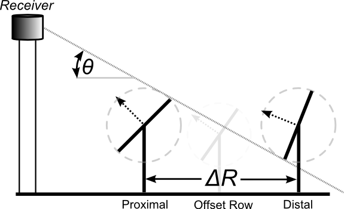
3.Evaluate the available heliostat positions from step (2) to determine estimated annual performance for each heliostat. A set of approximately 25 time steps are simulated throughout the year using averaged weather profiles for each simulation. The time steps compose 4 daily profiles with simulations every other hour. Each hour in the time step contains averaged weather data for the quarter of the year surrounding that day at the same hour of the day. In this way, SAM predicts the amount of power delivered by each heliostat position. The simulations evaluate the optical efficiency of each heliostat and include cosine, attenuation, intercept factor, reflectance and soiling, and blocking effects. Note that all heliostats are aimed at the centerpoint of the receiver during layout calculations. This approach is known as simple aim point strategy, where heliostats aim their reflection at the vertical centerline of the receiver in the region nearest the heliostat. Note that shadowing is not considered during layout simulations for several reasons: •Blocking and shadowing simulations result in similar efficiency trends over the year, so inclusion of blocking is typically sufficient to remove problematic heliostats. •The number of heliostats within range for shadowing from a given heliostat depends on the elevation angle of the sun, and low-elevation scenarios can result in comparison of a very large number of heliostats, significantly slowing down simulation speed. •The final layout is not significantly impacted by shadowing, given the blocking consideration mentioned above. •Inclusion of shadowing can lead to “cascaded” efficiency loss, where heliostats that would normally be omitted due to blocking shadow neighboring heliostats and cause subsequent removal of otherwise productive heliostats. 4.Collect simulation results for each heliostat and ranks each heliostat according to its simulated annual productivity. 5.Run a reference-point simulation that determines the energy delivered by the solar field to the receiver at a reference condition. The reference condition is the summer solstice at solar noon. 6.Remove the worst-performing heliostats from the layout in order beginning with the poorest heliostat. Removal continues while the total power delivered to the receiver exceeds the design-point thermal power plus estimated thermal losses from the receiver surface and from runner piping. Once the delivered power falls below the design threshold, the resulting list of heliostats comprises the final field layout. Heliostat layout generation assumes a constant receiver height and diameter and a constant tower height. SAM can optimize these variable values using the optimization tool. More information on solar field geometry optimization is provided in the Optimization section below. |